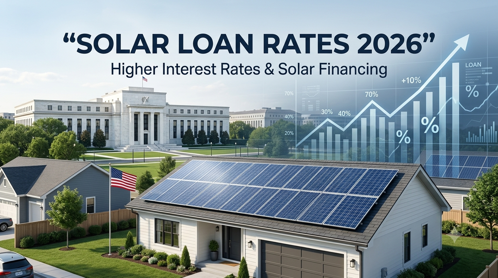

Will Higher Interest Rates Make Solar Loans More Expensive in the USA? September 2026 Guide
Updated September 5, 2026

Solar financing is closely connected to the broader cost of borrowing. When market interest rates rise, lenders can face higher funding costs and may eventually adjust the rates offered to consumers. That does not mean every solar loan moves immediately or by the same amount, but it makes the interest-rate environment important for homeowners planning a financed solar installation.
In September 2026, the question is especially timely. A stronger-than-expected U.S. August jobs report increased market expectations for a possible Federal Reserve rate increase at the September 15–16 meeting. Reuters reported that markets were pricing roughly a 59%–62% chance of a hike after the jobs data, while the Federal Reserve's September 4 H.15 release showed an effective federal funds rate of 3.63% and a bank prime rate of 6.75%. The Fed had not yet made the September meeting decision when this article was updated. Reuters · Federal Reserve
What Changed in September 2026?
The immediate news is not that solar loans have suddenly become more expensive nationwide. The important development is that financial markets are reassessing the path of U.S. interest rates.
On September 4, the U.S. Bureau of Labor Statistics jobs report showed payroll employment increased by 162,000 in August and unemployment remained at 4.1%. The stronger labor-market result pushed Treasury yields higher and increased expectations that the Federal Reserve could raise rates at its September meeting. Reuters reported that the probability priced by markets moved to around 59% after the report, while other reporting put the probability near 60%. Reuters jobs report coverage
Can Higher Interest Rates Increase Solar Loan Costs?
Yes, higher borrowing costs can put upward pressure on consumer loan rates, but the effect is not one-to-one. A lender may price solar loans using a combination of benchmark rates, its own funding costs, credit risk, operating costs, competition and promotional programs.
For homeowners, the practical lesson is simple: compare the actual APR and total repayment amount rather than assuming that a single Federal Reserve announcement determines the price of a solar loan.
Longer-term loans deserve extra attention. A small difference in APR can produce a meaningful difference in total interest over 10, 15 or 20 years, even when the monthly payment difference looks modest.
Current Solar Loan Rate Examples in September 2026
There is no single national solar-loan rate. Current lender examples show a wide range.
| Lender example | Published rate | Term | Important condition |
|---|---|---|---|
| Wheelhouse Credit Union | 5.99% APR and up | Up to 60 months | Rates vary by term, credit and payment method |
| Wheelhouse Credit Union | 8.49% APR and up | 181–240 months | Longer-term example; credit approval required |
| Star One Credit Union | 6.25%–8.00% APR | Published solar-loan options | Rate can vary with credit qualifications |
| Visions Federal Credit Union | 9.24% APR | 180 months | Published September 1–30, 2026 promotional rate; membership and conditions apply |
| Matadors Community Credit Union | Preferred rate from 4.74% APR | 144 months example | Published rate requires qualifying credit; minimum 720 FICO noted |
These are lender-specific examples, not a national average and not a guarantee that a homeowner will qualify. Wheelhouse lists rates effective September 1, 2026; Visions lists a 9.24% community solar loan rate for September 1–30; Star One lists 6.25%–8.00% ranges; and Matadors publishes a preferred 4.74% example subject to eligibility and credit requirements. Wheelhouse · Visions FCU · Star One · Matadors
How Much Can a Rate Change Affect Your Solar Loan Payment?
To make the difference easier to understand, consider a hypothetical $30,000 solar loan over 15 years. These are mathematical illustrations only and do not represent lender offers.
| Illustrative APR | Approx. monthly payment | Approx. total of payments |
|---|---|---|
| 6% | $253/month | $45,569 |
| 7% | $270/month | $48,537 |
| 8% | $287/month | $51,606 |
| 9% | $304/month | $54,771 |
| 10% | $322/month | $58,029 |
At these assumptions, moving from 6% to 10% adds about $69 per month and roughly $12,460 to the total scheduled payments. Actual loan costs can be different because real loans may include fees, different terms, deferred payments, rate discounts or other conditions.
Why the Federal Reserve Does Not Set Your Solar Loan APR
The Federal Reserve controls monetary policy and influences short-term financial conditions. It does not publish a nationwide consumer solar-loan APR that every lender must use.
Your actual solar financing offer can depend on:
- Credit score and credit history
- Loan term
- Amount financed
- Debt-to-income and other underwriting factors
- Whether the loan is secured or unsecured
- Dealer or origination fees
- Autopay or relationship discounts
- Lender competition and funding costs
- State and local program rules
That is why two homeowners can receive very different offers even when they apply during the same week.
Should You Finance Solar Now or Wait?
There is no universal answer. Waiting for a lower Fed rate does not guarantee a lower solar-loan APR, because lenders can change pricing for many reasons and solar equipment, installation and utility economics can also change.
Financing now may make sense when:
- You have a strong credit profile and can secure a competitive fixed APR.
- The project has a clear electricity-bill savings case under your utility's rates.
- You have compared the cash price with the financed price.
- The loan has reasonable fees and no unexpected payment reset.
Waiting may make sense when:
- Your credit profile is currently weak and you can improve it first.
- The proposed financing includes unusually high fees.
- You have not compared multiple lenders.
- Your solar quote itself is not competitive.
The strongest strategy is usually to compare the complete project economics rather than trying to predict the next Federal Reserve decision.
Solar Financing Checklist for September 2026
- Ask for the cash price before discussing financing.
- Ask for the exact amount financed.
- Compare the APR, not just the interest rate.
- Ask about dealer fees, origination fees and any rate-buydown cost.
- Check the monthly payment and the total amount repaid.
- Confirm whether the payment changes after a promotional or deferred period.
- Ask what happens if you receive a tax credit or incentive later.
- Compare at least two or three financing offers when possible.
- Make sure the solar system price, equipment and installation scope are comparable between quotes.
Frequently Asked Questions
Will a Fed rate hike automatically raise solar loan rates?
No. The Federal Reserve influences financial conditions, but individual solar-loan APRs are set by lenders and can depend on funding costs, competition, credit risk, term and fees.
What are solar loan rates in the USA in September 2026?
Published lender examples range widely. Some credit unions advertise rates below 6% for qualifying borrowers and shorter terms, while other long-term solar-loan examples are around 8%–9% or higher. Your actual rate can differ substantially.
Is 8% a high solar-loan rate?
There is no universal cutoff. An 8% APR may be competitive or expensive depending on the term, fees, borrower credit and available alternatives. Always compare the total repayment amount.
Should I wait for lower interest rates before installing solar?
Not necessarily. A future rate cut is uncertain, and the economics of solar also depend on equipment pricing, electricity rates, incentives, utility rules and installation costs.
What is more important: solar price or loan rate?
Both matter. A low APR on an inflated financed price can be worse than a higher APR on a genuinely lower project price. Compare the complete cash price, financed amount, APR and total repayment.
Bottom Line
September 2026 is an important month for U.S. solar financing because stronger August employment data has increased market attention on the Federal Reserve's upcoming rate decision. Current lender examples show that solar-loan APRs already vary substantially across terms and borrowers.
For homeowners, the safest approach is not to guess the Fed's next move. Instead, compare the cash solar price, financed amount, APR, fees, monthly payment and total repayment. A competitive loan can make solar easier to budget, while a long loan with heavy fees can significantly increase the total cost of the project.